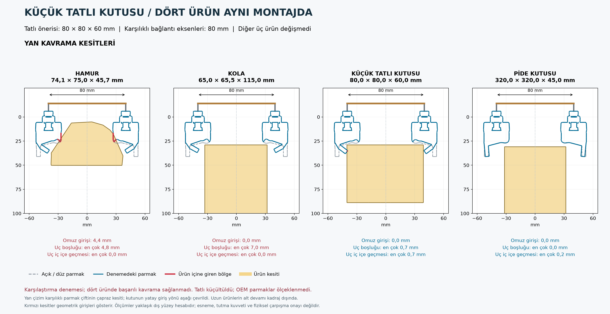
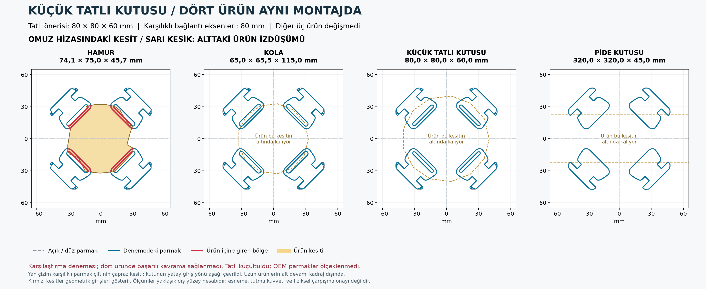

1. Yan kavrama kesitleri
“Tam boy aç”a dokunup iki parmağınla büyüt. Gri kesik çizgi açık parmak, mavi denenen bükülme, kırmızı ürün içine giren bölge.
Tam boy aç · Yan kesit
AUTOKITCH / ROCHU / KÜÇÜK TATLI DENEMESİ
Tatlı kutusu önerisi 80 × 80 × 60 mm. Diğer üç ürün ve OEM parmaklar değiştirilmedi. Dördünde de karşılıklı parmak bağlantı eksenleri arası 80 mm; bu, parmaklar arasındaki net açıklık değildir.
80, 75, 70 ve 65 mm tatlı en-boy seçenekleri ve sekiz ortak montaj yarıçapı karşılaştırıldı. Seçilen ayarda ürünlerin giriş derinliği ve uç bükülmesi ayrı ayarlandı. Aynı yükseklikte 80 mm tatlı seçeneğinin dış hacmi eski modele göre yaklaşık %28 daha küçük; gerçek porsiyon kapasitesi doğrulanmadı.
Sonuç: Tatlı ve pide kutusu geometrik temasa yaklaşıyor; hamur ve kolada sorun sürüyor. Bu çizim dört ürünün başarıyla tutulduğunu göstermiyor.
“Tam boy aç”a dokunup iki parmağınla büyüt. Gri kesik çizgi açık parmak, mavi denenen bükülme, kırmızı ürün içine giren bölge.
Tam boy aç · Yan kesit

Sarı kesik çizgi, bu kesitin altında kalan ürünün izdüşümüdür. Bu ürünlerde boş bir sahne gösterilmiyor; ürün daha aşağıdaki kavrama kotunda.
| Ürün | Omuz girişi | Uçta en büyük boşluk |
|---|---|---|
| Hamur | 4,4 mm | 4,8 mm |
| Kola | 0 mm | 7,0 mm |
| Tatlı 80 × 80 × 60 | 0 mm | 0,7 mm |
| Pide kutusu | 0 mm | 0 mm |
Tatlı uçlarında bazı bölgelerde 0,7 mm, kutuda 0,2 mm geometrik iç içe geçme de var. Bu yüzden temas yakınlığı, tutma kuvveti veya başarılı kavrama anlamına gelmez.